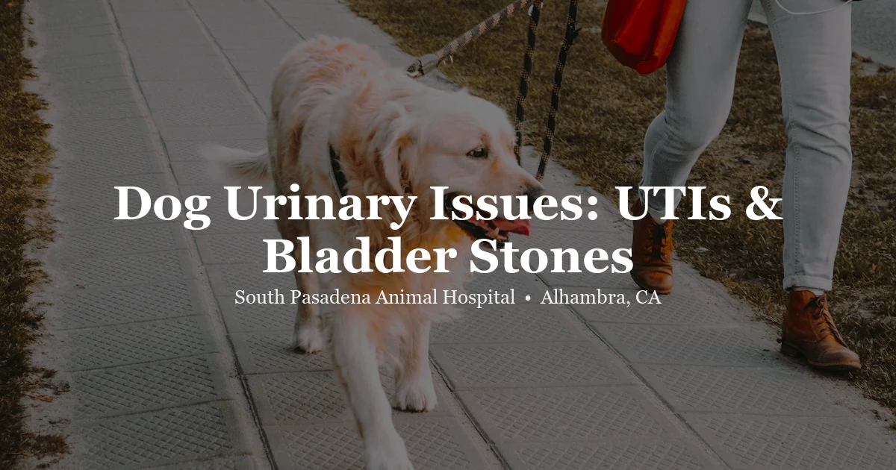

April 25, 2026 · 7 min read
Dog Urinary Issues: UTIs, Bladder Stones & Incontinence Explained

We see urinary problems in dogs every week at our Alhambra clinic. Squatting repeatedly and producing almost nothing. Blood in the urine. A previously reliable dog suddenly having accidents on the floor. These signs get owners in the door fast — and that's the right call. But here's what a lot of owners don't realize: these same signs can come from completely different problems, and the treatment for each one is very different.
A dog with a UTI needs antibiotics. A dog with bladder stones may need surgery. A dog leaking urine on her bed while she sleeps probably has a hormone problem that responds to one pill a day. Treating UTIs over and over when the actual problem is stones doesn't help — it just delays the diagnosis. Let's walk through what we actually look for.
Urinary Tract Infections in Dogs
UTIs are probably the most common urinary diagnosis we make — and also one of the most commonly overtreated. The typical picture: a dog squatting frequently, producing only a few drops each time, sometimes with pink-tinged or cloudy urine. Female dogs get them far more often than males. Their urethra is shorter and wider, which makes bacterial ascent into the bladder much easier.
What you'll usually notice at home:
- Squatting or lifting a leg much more often than usual, often with little urine coming out
- Straining or appearing uncomfortable during urination
- Urine that looks pink, red, or cloudy
- Accidents indoors from a dog who hasn't had one in years
- Licking at the vulva or prepuce repeatedly
- Urine that smells stronger or different than normal
To diagnose a UTI properly, we need a urinalysis — a microscopic look at the urine for white blood cells, bacteria, and red cells. When infection shows up, we follow with a urine culture and sensitivity test. That tells us exactly which bacteria we're dealing with and which antibiotics will actually kill it. This step matters. Giving a broad-spectrum antibiotic without culturing clears the symptoms temporarily but may not clear the infection — and repeated partial treatment creates resistant bacteria that become genuinely difficult to manage.
One thing we ask every owner: come back for a recheck urinalysis 5–7 days after the antibiotic course ends. Not because we don't trust the medication — but because a dog who feels better isn't the same as a dog who is actually clear. That recheck catches treatment failures before they become chronic problems. Most owners skip it. We'd really rather they didn't.
When UTIs Keep Coming Back
Two UTIs in a year is a pattern, not bad luck. We don't just keep prescribing antibiotics — we start looking for why it keeps happening. The most common culprits we find:
- Bladder stones or crystals — rough surfaces where bacteria anchor and hide from antibiotics
- Deep skin folds around the vulva that trap moisture and bacteria right at the urethral opening
- Underlying conditions that change the urine environment: diabetes, Cushing's disease, hypothyroidism, or long-term steroid use
- Bladder masses or polyps
- Incomplete bladder emptying from a neurological or anatomical cause
For a dog with recurrent UTIs, we'll typically recommend abdominal X-rays or ultrasound plus bloodwork. Imaging to rule out stones. Bloodwork to rule out systemic disease. Once we know what we're actually dealing with, we can treat the cause — not just the symptom.
Bladder Stones in Dogs
Bladder stones form when minerals in the urine crystallize and clump together. They range from fine gritty sand to smooth stones the size of a grape. Dogs with stones often look exactly like dogs with UTIs — because stones and UTIs frequently occur together. The stone creates a rough surface inside the bladder; bacteria love it.
Struvite Stones
Struvite is the most common bladder stone type we see in dogs, and it's almost always tied to a bacterial infection. Certain bacteria produce an enzyme called urease that raises urine pH, which is exactly the environment struvite needs to form. The good news: struvite can often be dissolved without surgery. We treat the infection with the right antibiotic and feed a prescription dissolution diet for several weeks — confirmed with follow-up X-rays. No infection, no more stones forming. But skip the follow-up imaging and you won't know if it worked.
Calcium Oxalate Stones
Calcium oxalate is the other common type — and it's a different situation entirely. These cannot be dissolved. They have to come out surgically. We see them most often in Miniature Schnauzers, Bichon Frises, Shih Tzus, and Lhasa Apsos. After removal, prevention focuses on keeping urine dilute (meaning: encourage drinking, consider a wet food diet) and periodic monitoring urinalysis. Some dogs need dietary modification as well. The recurrence rate without monitoring is high.
Urate Stones
Urate stones are less common but worth knowing about, especially if you have a Dalmatian. Dalmatians have a genetic quirk in uric acid metabolism that predisposes them to urate stones regardless of diet or overall health. In other breeds, urate stones often signal liver disease — specifically a portosystemic shunt, where blood bypasses the liver. These stones are radiolucent, meaning they don't show up on standard X-rays. We need ultrasound or contrast imaging to find them. Treatment involves addressing whatever is driving the uric acid elevation.
In any stone case — straining, hematuria, recurrent infections — we'll take abdominal X-rays first. Most stones are visible. If we suspect urate or have a Dalmatian in the exam room, we add ultrasound. Stone type determines treatment, so identifying it before we do anything else is the whole game.
Urinary Incontinence in Dogs
Incontinence looks different from a UTI. The dog isn't straining. She's not squatting repeatedly. She's just leaving wet spots on her bed while she sleeps, or dribbling urine without seeming to know it's happening. That passive, unconscious leakage is the tell.
Hormone-Responsive Incontinence (USMI)
This is by far the most common cause we see — and it's almost exclusive to spayed female dogs, especially larger breeds. After spaying, estrogen levels drop, and that loss of estrogen weakens the urethral sphincter. The dog urinates perfectly normally when she chooses to. But when she's relaxed or asleep, the sphincter can't quite hold. She wakes up in a wet spot with no idea how it got there.
The honest truth about USMI: it's very treatable. Phenylpropanolamine (PPA) works well in the majority of affected dogs, often within a few days of starting. Diethylstilbestrol (DES) is another option. Most dogs do extremely well long-term on medication. If your large-breed spayed female is leaking on the bed — don't wait. This one is genuinely easy to fix.
Other Causes Worth Ruling Out
Not every case of incontinence is hormonal. Other causes we investigate:
- Neurological disease — a spinal cord injury, disc disease, or degenerative myelopathy can break down the neural pathway that keeps the sphincter closed
- Ectopic ureter — a birth defect where one or both ureters attach in the wrong place, bypassing the sphincter entirely; these dogs leak constantly from puppyhood and need imaging to diagnose and often surgery to correct
- Overflow incontinence — a bladder so chronically full it simply leaks because there's nowhere else to go; usually from an obstruction or neurological cause
- Old age — some senior dogs lose sphincter tone as part of normal aging
When the Dog Is Drinking and Urinating Way Too Much
This is a different pattern — not straining, not accidents, not leaking. Just a dog who drinks constantly and produces enormous amounts of urine. Excessive drinking and urinating together (we call it PU/PD — polyuria/polydipsia) points away from the bladder and toward a systemic problem. Diabetes mellitus. Cushing's disease. Kidney disease. Liver disease. High calcium. These all disrupt the kidney's ability to concentrate urine, and the result is a dog drinking a bowl of water every hour and needing to go out four times a night.
PU/PD needs a full bloodwork panel and urinalysis — not just a urine culture. The bladder is usually fine. The problem is elsewhere.
Intact Male Dogs: Don't Forget the Prostate
An intact male dog over 5 years old who starts straining to urinate — prostate disease is on the list immediately. Benign prostatic hyperplasia (BPH) is almost universal in intact males with age. The prostate grows, compresses the urethra, and makes urination difficult. Neutering resolves BPH reliably and quickly. Intact males can also develop bacterial prostatitis, which is painful and requires antibiotics alongside neutering. If your intact male dog is straining or producing ribbon-thin streams of urine, get him seen.
What We Actually Do at the Clinic
A urinary workup at our clinic isn't complicated, but it is systematic. We don't guess. Here's what we run:
- Urinalysis — concentration, pH, protein, glucose, blood, and sediment. We prefer a sample collected by cystocentesis (a quick bladder tap) because it avoids contamination from the skin or floor — but a clean mid-stream catch works for a first look.
- Urine culture and sensitivity — when infection is found or strongly suspected, this tells us exactly what we're treating and with what
- Abdominal X-rays — most bladder stones show up clearly; we also check prostate size in intact males
- Abdominal ultrasound — bladder wall thickness, kidney architecture, prostate detail, and any masses or radiolucent stones that X-rays miss
- Blood panel — rules out diabetes, kidney disease, Cushing's, liver disease, and elevated calcium as driving causes
The dogs who do best are the ones whose owners come in early, let us run the right tests, and follow up after treatment. Urinary problems are highly manageable when we know what we're managing.
Frequently Asked Questions
How do I know if my dog has a UTI?
The main signs: squatting or lifting a leg much more often than normal, producing very little urine each time, blood-tinged or cloudy urine, accidents indoors, or licking at the genitals. Female dogs get UTIs more often than males. But these same signs can come from bladder stones or other conditions — a urinalysis is needed to know what's actually going on. Contact us to get your dog seen.
Can a dog UTI go away on its own?
Sometimes, but we wouldn't count on it. Untreated infections can move up into the kidneys — that's called pyelonephritis, and it's a much more serious problem. And if there's an underlying stone causing the infection, it will absolutely recur without treating the stone. A urine culture tells us what antibiotic to use so we're actually clearing the infection, not just masking it.
My spayed female dog leaks urine when she sleeps — is this a UTI?
Almost certainly not. Passive leakage during rest — wet spots on the bed, the dog has no idea it happened — is classic hormone-responsive incontinence (USMI). It's extremely common in spayed large-breed females and has nothing to do with bacteria. It's also very treatable. One medication, usually significant improvement within days. Bring her in.
What breeds are most prone to bladder stones?
Miniature Schnauzers, Bichon Frises, Shih Tzus, Yorkshire Terriers, and Lhasa Apsos show up often for calcium oxalate stones. Dalmatians have a genetic quirk that makes urate stones a lifetime concern regardless of diet. If your dog is one of these breeds, an annual urinalysis to catch crystal formation early is genuinely worthwhile — it's far easier to prevent stones than to remove them.
How are bladder stones treated in dogs?
Depends entirely on the stone type — which is why we identify it before recommending anything. Struvite stones linked to infection can often be dissolved with the right antibiotic plus a prescription diet over several weeks. Calcium oxalate and most other stone types need to come out surgically. After removal, we put a prevention plan in place because recurrence without monitoring is common. X-rays and urinalysis guide everything.